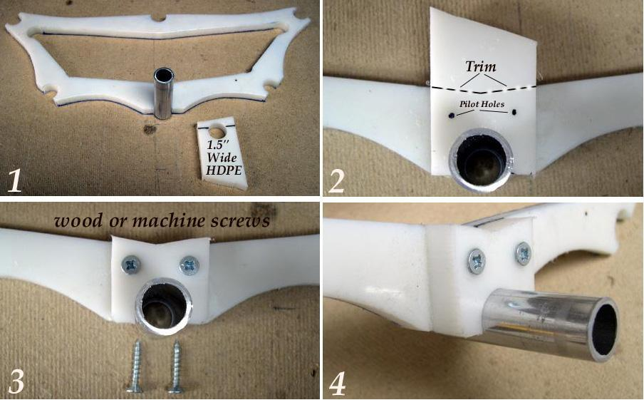

| Frame Maintenance ( 2 of 4) | Menu Previous Page Next Page |
|

Replacement "Snap"
1. In the sample above, the keel "snap" at section 7 ( Sea Rover) has been incorrectly cut-off and requires a new "snap" connection. A 1.5" wide piece of scrap HDPE has been drilled and marked at it's cutoff. ( .25" of the .75" hole) 2. After cut-off, snap the HDPE section onto the keel stringer and mark two pilot holes for drilling. Draw the outline of the cross section on the back of the "snap" section for cutting. 3. Trim the "snap" section and drill the pilot holes. Smooth any rough edges with a file. 4. Wood screws provide excellent hold on HDPE, but machine screws/nuts can be used if deemed necessary. This snap connector took less than 5 minutes to fabricate and serves as a permanent "fix". Making a "Replacement Cross Section" is described on the next page. 5. To save money, you can machine screw HDPE snaps to a wooden cross sections using the steps above if your stringers are aluminum. If sheets of HDPE are not available locally, just use a 1/2" plastic kitchen cutting board as most are made of HDPE. |
|